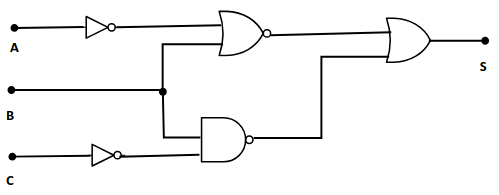
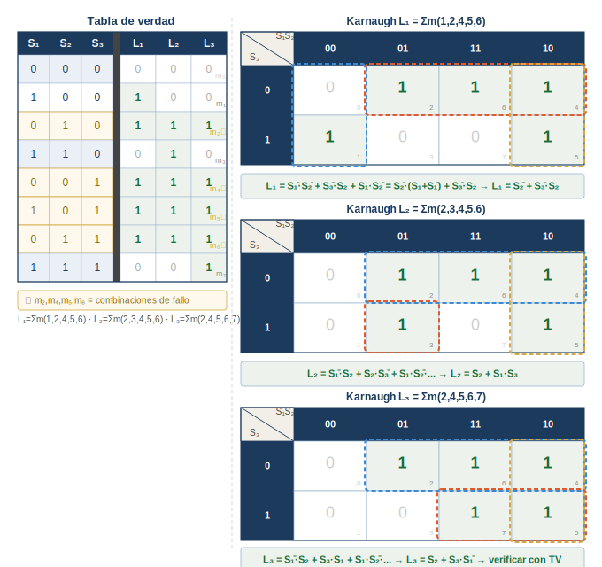
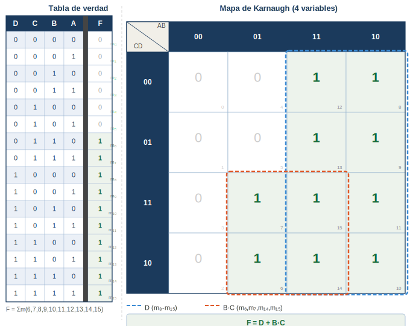
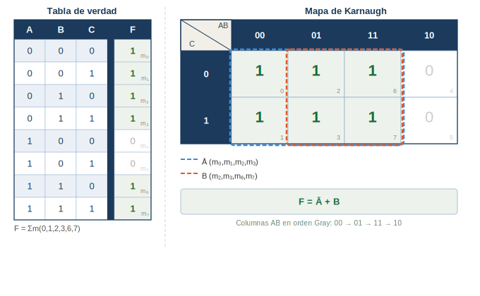
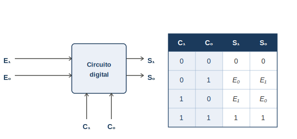
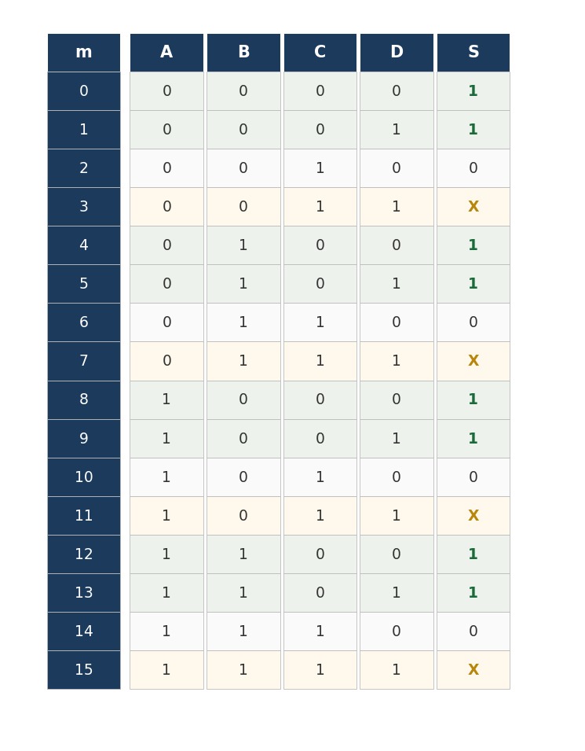
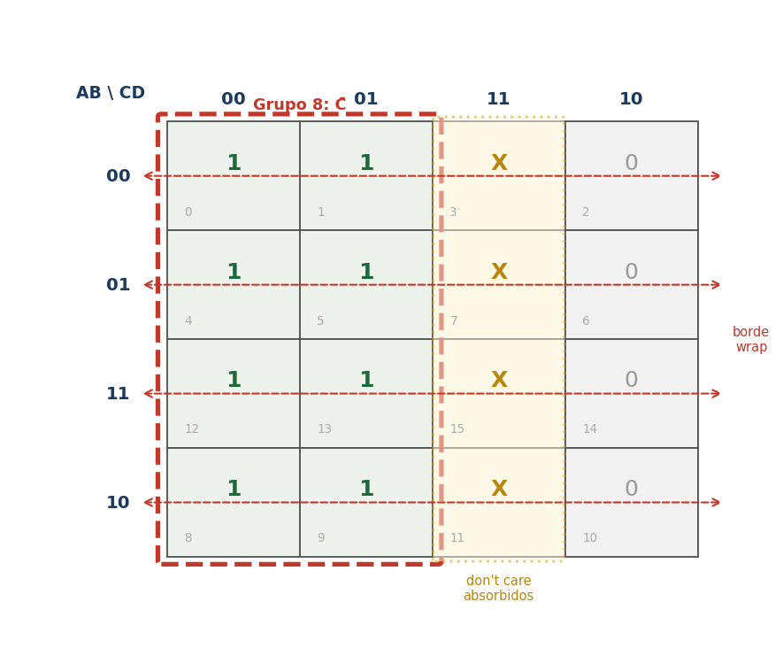
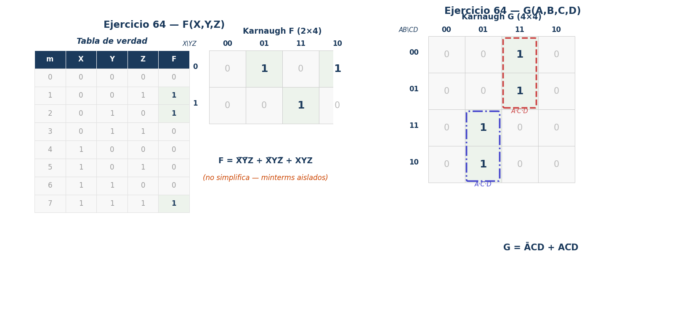
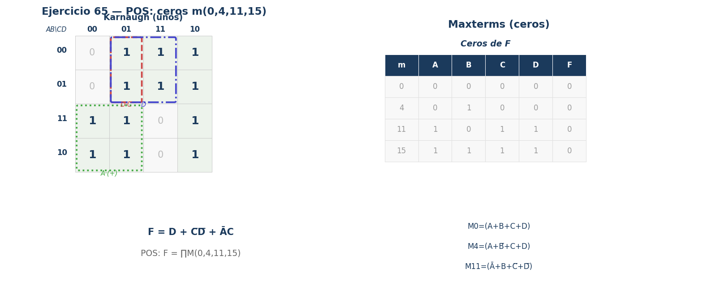
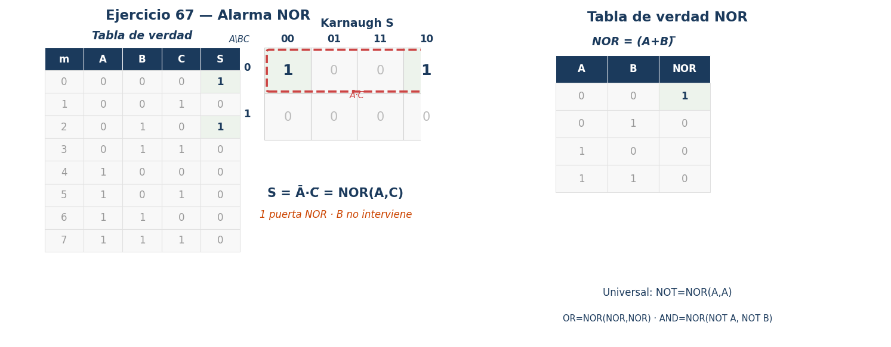

En un invernadero de pimientos de Almería se desea automatizar el sistema de riego mediante una función lógica combinacional. El sistema dispone de tres sensores binarios: un sensor de humedad (H) que adopta valor 1 cuando la humedad del suelo es baja, un sensor de temperatura (T) que adopta valor 1 cuando la temperatura ambiente es alta, y un programador horario (P) que adopta valor 1 cuando se encuentra dentro de la franja horaria habilitada. El sistema activará el riego (R = 1) únicamente cuando la humedad sea baja y, además, se dé al menos una de las dos condiciones siguientes: temperatura alta o programador habilitado.
a) Obtenga la tabla de verdad completa de R(H, T, P).
b) Determine la función canónica y simplifíquela aplicando el método de Karnaugh.
c) Implemente el circuito simplificado con puertas AND, OR y NOT.
R = 1 cuando H = 1 y (T = 1 o P = 1). Se construye la tabla recorriendo las 8 combinaciones de H, T y P:
| m | H | T | P | R |
|---|---|---|---|---|
| 0 | 0 | 0 | 0 | 0 |
| 1 | 0 | 0 | 1 | 0 |
| 2 | 0 | 1 | 0 | 0 |
| 3 | 0 | 1 | 1 | 0 |
| 4 | 1 | 0 | 0 | 0 |
| 5 | 1 | 0 | 1 | 1 |
| 6 | 1 | 1 | 0 | 1 |
| 7 | 1 | 1 | 1 | 1 |
Minterms activos: m5, m6, m7 ⇒ \(R = \sum m(5,6,7)\).
Forma canónica SOP: \(R = H\overline{T}P + HT\overline{P} + HTP\).
Grupo 1: {m5,m7} → H·P (T varía, se elimina)
Grupo 2: {m6,m7} → H·T (P varía, se elimina)
\[R\ = \ H \cdot P + H \cdot T\ = \ H \cdot (T + P)\]
⚠ Factorizar después de Karnaugh: H·P+H·T = H·(T+P). Reduce el número de puertas.
⚠ Grupos en Karnaugh de 3 variables: potencias de 2 (1, 2, 4 u 8 celdas).
R = H·(T+P)Para el circuito lógico con tres entradas A, B y C representado en la figura adjunta, se pide:
a) Obtener la expresión algebraica de S y su tabla de verdad.
b) Simplificar S por Karnaugh e implementar con puertas NAND de 2 entradas.
c) Implementar con NAND de 2 entradas e indicar la diferencia entre circuito combinacional y secuencial.

Nivel 1: P = Ā·B (AND con A invertida)
Nivel 1: Q = B·C̄ (AND con C invertida)
Nivel 2: S = P + Q = Ā·B + B·C̄
\[S = \overline{A} \cdot B + B \cdot \overline{C} = B \cdot (\overline{A} + \overline{C}) = B \cdot \overline{A \cdot C}\]
S = 1 para: m₂ (A=0,B=1,C=0) · m₃ (A=0,B=1,C=1) · m₆ (A=1,B=1,C=0)
Mapa Karnaugh de 3 variables: S=1 en m₂(010), m₃(011) y m₆(110). Dos grupos obligatorios: {m₂,m₃} → Ā·B (C varía) y {m₂,m₆} → B·C̄ (A varía). No se puede reducir a un solo término.
\[S\ = \ Ā \cdot B\ + \ B \cdot \overline{C}\ = \ B \cdot (Ā + \overline{C})\]
Combinacional: la salida depende SOLO de las entradas actuales. No tiene memoria.
Secuencial: la salida depende de las entradas actuales Y del estado anterior (tiene memoria: biestables, registros).
⚠ EL PASO CLAVE: etiquetar TODAS las salidas intermedias (P, Q, R…) antes de escribir la expresión final.
⚠ Leer el circuito de izquierda a derecha, nivel por nivel.
⚠ De Morgan: (A·C)̄ = Ā+C̄. Útil para simplificar expresiones con NAND y NOR.
⚠ Tipo frecuente en PAU: circuito dado → función. Distinto del tipo función → circuito.
S = B·(Ā+C̄)Un depósito de agua de una instalación industrial de Jaén dispone de tres sensores de nivel escalonados S1 < S2 < S3, donde S1 es el sensor más bajo. Cada sensor vale 1 si está en contacto con el agua. El sistema activa exclusivamente el LED L1 cuando solo llega a S1, L2 cuando llega a S2 y L3 cuando llega a S3. Si se detecta una combinación físicamente imposible, se encienden los tres LEDs como señal de fallo.
a) Obtén la tabla de verdad y las funciones canónicas de L1, L2 y L3.
b) Simplifica las funciones por Karnaugh e implementa con puertas lógicas.
A = S1, B = S2, C = S3 (A=LSB, C=MSB). Sensores escalonados: si S2=1 implica S1=1; si S3=1 implica S1=S2=1.
Combinaciones POSIBLES: m0(000), m1(001), m3(011), m7(111).
Combinaciones de FALLO: m2(010), m4(100), m5(101), m6(110).

Variables: A = S1 (LSB), B = S2, C = S3 (MSB). En condiciones físicamente posibles, si S2=1 entonces S1=1, y si S3=1 entonces S1=S2=1. El resto de combinaciones son de FALLO y encienden los tres LEDs.
| m | C (S3) | B (S2) | A (S1) | L1 | L2 | L3 | Estado |
|---|---|---|---|---|---|---|---|
| 0 | 0 | 0 | 0 | 0 | 0 | 0 | Vacío |
| 1 | 0 | 0 | 1 | 1 | 0 | 0 | Solo S1 |
| 2 | 0 | 1 | 0 | 1 | 1 | 1 | FALLO |
| 3 | 0 | 1 | 1 | 0 | 1 | 0 | Hasta S2 |
| 4 | 1 | 0 | 0 | 1 | 1 | 1 | FALLO |
| 5 | 1 | 0 | 1 | 1 | 1 | 1 | FALLO |
| 6 | 1 | 1 | 0 | 1 | 1 | 1 | FALLO |
| 7 | 1 | 1 | 1 | 0 | 0 | 1 | Hasta S3 |
Combinaciones posibles: m0, m1, m3, m7. Combinaciones de fallo: m2, m4, m5, m6 (todos los LEDs a 1).
Funciones canónicas (suma de minterms):
\[L_1 = \sum m(1,2,4,5,6) \qquad L_2 = \sum m(2,3,4,5,6) \qquad L_3 = \sum m(2,4,5,6,7)\]
L3: grupo {m4,m5,m6,m7} = C (fila C=1 completa) + {m2,m6} = B·Ā:
\[L3\ = \ C\ + \ B \cdot Ā\]
L2: {m2,m3} = B·C̄ + {m4,m6} = C·Ā + {m4,m5} = C·B̄:
\[L2\ = \ B \cdot \overline{C}\ + \ C \cdot Ā\ + \ C \cdot \overline{B}\]
L1: {m1,m5} = A·B̄ + {m2,m6} = Ā·B + {m4,m6} = Ā·C:
\[L1\ = \ A \cdot \overline{B}\ + \ Ā \cdot B\ + \ Ā \cdot C\]
⚠ Con sensores escalonados las combinaciones imposibles SON los estados de fallo: tratarlos como 1 (todos encendidos).
⚠ L3 es la más sencilla: C (toda la fila S3=1) más B·Ā para el fallo m2.
⚠ Triple salida: hacer un Karnaugh INDEPENDIENTE para cada función L1, L2, L3.
⚠ Tipo Ponencia P4B: tres sensores escalonados con estado de fallo → tres funciones independientes.
Bloque L1,L2,L3El sistema de control de una estación de bombeo de riego de la comarca de Granada recibe agua de cuatro tuberías con caudales de 5, 10, 20 y 30 l/min respectivamente (tuberías A, B, C y D). Cada tubería tiene un sensor que vale 1 cuando circula agua. Se quiere diseñar un circuito que detecte si el caudal total es igual o superior a 30 l/min.
a) Obtén la tabla de verdad del circuito.
b) Obtén la expresión simplificada mediante Karnaugh e implementa con puertas lógicas.
c) Razona si alguna entrada no influye en la función simplificada.

F=1 si caudal total ≥ 30 l/min. Los valores posibles de cada tubería: A=5, B=10, C=20, D=30.
D=1 solo → 30 l/min ✓. B=1,C=1,D=0 → 10+20=30 ✓. B=1,C=0,D=0 → 10 ✗. Etc.
F=1 para minterms donde suma ≥ 30: m8(D),m10(BD→30+10>30),m12(CD),m14(BCD),m15(ABCD)... más m donde D=1 o (B=1,C=1).
Grupo {m8,m9,m10,m11,m12,m13,m14,m15} = D (toda la columna D=1)
Grupo {m6,m7,m14,m15} = B·C (B=1, C=1, D varía)
\[F\ = \ D\ + \ B \cdot C\]
La variable A (tubería de 5 l/min) NO aparece en la expresión simplificada.
Motivo: por sí sola A no alcanza 30 l/min, y cuando D=1 o B·C=1 ya se cumple la condición independientemente de A.
El caudal mínimo detectado es 30 l/min: bien con D solo (30 l/min) o con B+C (10+20=30 l/min).
⚠ Verificar siempre: D=1 → caudal ≥ 30 ✓. B=1,C=1 → 10+20=30 ✓. A=1,B=1,C=0,D=0 → 5+10=15 < 30 ✗.
⚠ A=5 l/min: no puede completar los 30 l/min sin B o D. Por eso no aparece en la función.
⚠ Ponencia P1: preguntan habitualmente si alguna variable no influye → siempre justificar.
F = D + B·CUn sistema digital está definido mediante la siguiente función lógica:
\[F\ = \ Ā \cdot (\overline{B} + C + B \cdot \overline{C}) + A \cdot B\]
a) Obtenga la tabla de verdad y la función lógica simplificada usando Karnaugh.
b) Dibuje el circuito con puertas lógicas NAND de la función simplificada.

Desarrollar Ā·(B̄+C+B·C̄) aplicando distributiva:
\[F\ = \ Ā \cdot \overline{B}\ + \ Ā \cdot C\ + \ Ā \cdot B \cdot \overline{C}\ + \ A \cdot B\]
Tabla de verdad (3 variables, 8 filas): F=0 solo en m₄(100) y m₅(101). F=1 en m₀,m₁,m₂,m₃,m₆,m₇.
Mapa Karnaugh (A vs BC): F=0 en m₄ y m₅ únicamente → dos grupos de 4:
Grupo 1: {m₀,m₁,m₂,m₃} → Ā (toda la fila A=0). Grupo 2: {m₂,m₃,m₆,m₇} → B (toda la columna B=1).
\[F\ = \ Ā\ + \ B\]
F = Ā+B. Por De Morgan: Ā+B = (A·B̄)̄ → NAND de 2 entradas con A y B̄ (NOT previo en B).
Nivel 1: NOT en B → B̄. Nivel 2: NAND(A, B̄) → F.
Verificación con la tabla de verdad: para A=1, B=0 → B̄=1 → NAND(1,1)=0 ✓ Para A=0, B=0 → B̄=1 → NAND(0,1)=1 ✓ Para A=1, B=1 → B̄=0 → NAND(1,0)=1 ✓
Número mínimo de puertas: 2 puertas NAND de 2 entradas. La primera actúa como NOT (entradas unidas), la segunda realiza la función final. No se puede reducir a una sola puerta NAND porque F no es un producto simple.
Comparación con AND-OR-NOT: la implementación AND/OR/NOT requeriría 3 puertas (NOT+AND+OR). Con NAND se reduce a 2 puertas, lo que supone una reducción del 33% en el número de componentes.
F = Ā + B (NAND)El circuito digital de la figura es un sistema que transmite la información de la entrada formada por los bits E₁ y E₀ a la salida formada por S₁ y S₀. La transmisión se realiza en función del estado de las señales de control C₁ y C₀, según la tabla adjunta:
C₁=0, C₀=0 → S₁=0, S₀=0 (bloqueo) | C₁=0, C₀=1 → S₁=E₀, S₀=E₁ (cruce)
C₁=1, C₀=0 → S₁=E₁, S₀=E₀ (directo) | C₁=1, C₀=1 → S₁=1, S₀=1 (forzado)
a) Obtenga la tabla de verdad y las funciones lógicas simplificadas por Karnaugh.
b) Obtenga el circuito lógico de las funciones simplificadas usando solo puertas NAND.

4 entradas (C₁,C₀,E₁,E₀), 2 salidas (S₁,S₀). 16 combinaciones. S₁=1 en minterms: m₅,m₇,m₁₀,m₁₁,m₁₂,m₁₃,m₁₄,m₁₅.
Karnaugh S₁ (C₁C₀ vs E₁E₀): tres grupos de 4 — {m₁₂–m₁₅}=C₁·C₀, {m₁₀,m₁₁,m₁₄,m₁₅}=C₁·E₁, {m₅,m₇,m₁₃,m₁₅}=C₀·E₀.
\[S_1\ = \ C_1 \cdot C_0\ + \ C_1 \cdot E_1\ + \ C_0 \cdot E_0\]
S₀ es simétrica (E₁↔︎E₀): S₀=1 en m₆,m₇,m₉,m₁₁,m₁₂,m₁₃,m₁₄,m₁₅ → mismos grupos con E₁ y E₀ intercambiados.
\[S_0\ = \ C_1 \cdot C_0\ + \ C_1 \cdot E_0\ + \ C_0 \cdot E_1\]
Para S₁ = C₁·C₀ + C₁·E₁ + C₀·E₀ aplicar De Morgan dos veces:
Nivel 1 (NAND-2): NAND(C₁,C₀), NAND(C₁,E₁), NAND(C₀,E₀) → tres salidas negadas.
Nivel 2 (NAND-3): NAND de las tres salidas del nivel 1 → S₁. Ídem para S₀ con E₁↔︎E₀.
Un sistema de control de acceso en una planta industrial de Córdoba genera una señal de alarma S en función de cuatro variables: A (sensor de puerta), B (sensor de movimiento), C (identificación RFID), D (horario laboral). La tabla de verdad define la función como suma de minterms:
\[S(A,B,C,D)\ = \ \Sigma m(0,\ 1,\ 4,\ 5,\ 8,\ 9,\ 12,\ 13)\ + \ d(3,\ 7,\ 11,\ 15)\]
a) Completar el mapa de Karnaugh de 4 variables (filas AB, columnas CD).
b) Identificar los grupos óptimos (incluyendo agrupaciones de borde y don’t care) y obtener la expresión mínima en SOP.
c) Implementar la expresión mínima con puertas NAND de 2 entradas.


Grupo 1 (8 celdas, borde horizontal): columnas CD=00 y CD=01 en todas las filas AB → cubre m(0,1,4,5,8,9,12,13) + d(3,7,11,15) con X tratadas como 1. Éstas forman un bloque de 8 en las columnas 00-01 (incluyendo borde izquierdo-derecho: las columnas 00 y 01 son adyacentes entre sí y además la columna 00 es adyacente a la columna 10 por el borde del mapa).
Grupo 1: columnas CD=00 y CD=01 → D=0 y D=1 con C=0, todas las filas AB → única variable que cambia: A, B, D. Variables fijas: C=0 ⇒ término: C̅
Grupo 2 (8 celdas, usando don’t care): columna CD=11 en todas las filas (d(3,7,11,15)) + columna CD=01 (m(1,5,9,13)) → ya cubiertos por Grupo 1.
Resumen: todos los minterms obligatorios (0,1,4,5,8,9,12,13) quedan cubiertos por el único grupo de 8 (C=0 en todas las filas y columnas CD=00,01). Las X de la columna CD=11 se aprovechan para ampliar el grupo.
\[S_{\min}\ = \ \overline{C}\]
Verificación: m(0)=ABCD=0000→C=0✓, m(1)=0001→C=0✓, m(4)=0100→C=0✓, m(5)=0101→C=0✓, m(8)=1000→C=0✓, m(9)=1001→C=0✓, m(12)=1100→C=0✓, m(13)=1101→C=0✓. Los maxterms (2,6,10,14: C=1,D=0) dan S=0 ✓
Como \(S = \overline{C}\), basta una NAND con sus dos entradas conectadas a C, ya que:
\[\mathrm{NAND}(C, C) = \overline{C \cdot C} = \overline{C} = S\]
Total: 1 puerta NAND de 2 entradas (auto-conectada). La universalidad de NAND queda patente: cualquier inversor se reduce a una NAND con sus entradas unidas.
⚠ Las agrupaciones de borde en Karnaugh se forman entre filas/columnas opuestas del mapa (el mapa es cilíndrico). Los don’t care (X) se tratan como 1 si amplían el grupo, o como 0 si no. Siempre buscar el grupo más grande posible (potencia de 2: 1,2,4,8,16). Con 4 variables el mapa es 4×4 = 16 celdas.
S = C̄ (NOT)Dadas las dos funciones lógicas siguientes:
\[F(X,Y,Z)\ = \ \overline{X}\overline{Y}Z\ + \ \overline{X}Y\overline{Z}\ + \ XYZ\]
\[G(A,B,C,D)\ = \ \overline{A}\overline{B}CD\ + \ \overline{A}BCD\ + \ A\overline{B}\overline{C}D\ + \ AB\overline{C}D\]
a) Obtener las tablas de verdad de F y G.
b) Simplificar ambas funciones por el método de Karnaugh e implementar F con puertas NAND de 2 entradas.

F tiene 3 términos: X̅Y̅Z + X̅YZ̅ + XYZ → F=1 en m1, m2, m7.
| m | X | Y | Z | F |
|---|---|---|---|---|
| 0 | 0 | 0 | 0 | 0 |
| 1 | 0 | 0 | 1 | 1 |
| 2 | 0 | 1 | 0 | 1 |
| 3 | 0 | 1 | 1 | 0 |
| 4 | 1 | 0 | 0 | 0 |
| 5 | 1 | 0 | 1 | 0 |
| 6 | 1 | 1 | 0 | 0 |
| 7 | 1 | 1 | 1 | 1 |
Tabla de G (4 variables, 16 filas): G=1 en m(3, 7, 9, 13).
m3 =0011: A̅B̅CD✓ m7=0111: A̅BCD✓ m9=1001: AB̅C̅D✓ m13=1101: ABC̅D✓
YZ: 00 01 11 10
X=0: 0 1 0 1 m1(01) y m2(10) aislados
X=1: 0 0 1 0 m7(11)
No hay grupos de 2 o 4 que agrupen m1, m2 y m7 juntos ⇒ F no simplifica más que la forma canónica:
\[F\ = \ \overline{X}\overline{Y}Z\ + \ \overline{X}Y\overline{Z}\ + \ XYZ\ \ (no\ simplifica\ por\ Karnaugh)\]
G=1 en m(3,7,9,13): columna CD=11 en filas AB=00,01 y columna CD=01 en filas AB=10,11.
\[Grupo\ 1:\ \{ m3,m7\}\ \Rightarrow \ \overline{A}CD\ \ \cdot \ \ Grupo\ 2:\ \{ m9,m13\}\ \Rightarrow \ A\overline{C}D\ \ \Rightarrow \ \ G\ = \ \overline{A}CD\ + \ A\overline{C}D\]
F = X̅Y̅Z + X̅YZ̅ + XYZ. Aplicando De Morgan doble negación:
\[F\ = \ NAND(NAND(\overline{X},\overline{Y},Z),\ NAND(\overline{X},Y,\overline{Z}),\ NAND(X,Y,Z))\]
Con NAND de 2 entradas: obtener complementos con NAND(X,X)=X̅; cada producto de 3 literales se encadena con dos NAND de 2 entradas; la suma final es una NAND de 3 entradas = dos NAND de 2 entradas en cascada.
⚠ Con dos salidas: resolver cada una de forma independiente. F y G tienen sus propias variables (X,Y,Z vs. A,B,C,D). Cuando Karnaugh no reduce el número de términos es un resultado válido — no siempre hay simplificación.
F(X,Y,Z) (AND+OR)Una función booleana de 4 variables (A, B, C, D) debe tomar el valor “0” únicamente cuando se cumplan las siguientes condiciones: i) A=0, B=0, C=0, D=0; ii) A=0, B=1, C=0, D=0; iii) A=1, B=0, C=1, D=1; iv) A=1, B=1, C=1, D=1. En todos los demás casos la función vale “1”.
a) Identificar los maxterms (ceros) e indicar la forma POS canónica de la función.
b) Obtener la forma SOP canónica (suma de minterms) y simplificar por Karnaugh.
c) Implementar la función simplificada con puertas NAND de 2 entradas.

Ceros en: m0(0000), m4(0100), m11(1011), m15(1111). Son los maxterms M0, M4, M11, M15.
Regla POS: cada maxterm Mi se obtiene sumando las variables, con complemento si el bit es 1 y sin complemento si es 0.
\[M0 = (A + B + C + D)\ \cdot \ M4 = (A + \overline{B} + C + D)\ \cdot \ M11 = (\overline{A} + B + \overline{C} + \overline{D})\ \cdot \ M15 = (\overline{A} + \overline{B} + \overline{C} + \overline{D})\]
\[F\ = \ \prod M(0,4,11,15)\ = \ M0 \cdot M4 \cdot M11 \cdot M15\]
F=1 en los 12 minterms restantes: m(1,2,3,5,6,7,8,9,10,12,13,14). Karnaugh 4×4:
CD: 00 01 11 10
AB 00: 0 1 1 1
AB 01: 0 1 1 1
AB 11: 1 1 0 1
AB 10: 1 1 0 1
Grupos: {m1,m3,m5,m7,m9,m13} col CD=01 + borde ⇒ D·C̅ + otros grupos ⇒
\[Grupo\ de\ 8\ (col\ CD = 01,\ todas\ AB):\ D\ \ \cdot \ \ Grupo\ de\ 4\ (col\ CD = 10,\ todas\ AB):\ \overline{C}\overline{D}\ \ \cdot \ \ Grupo\ de\ 4\ (fil\ AB = 00 + 01,\ col\ CD = 11 + 10):\ \overline{A}C\]
\[F_{\min}\ = \ D\ + \ \overline{C}\overline{D}\ + \ \overline{A}C\]
⚠ Clave POS: los ceros determinan los maxterms. Cada maxterm Mi se escribe con variables NO complementadas donde el bit es 0 y complementadas donde es 1 (opuesto a los minterms). Para simplificar por Karnaugh usar los unos (SOP), no los ceros.
F = D + C̄·D̄ + Ā·CSe tiene la función lógica simplificada F = AB + AC + BC implementada con puertas AND de 3 entradas, OR de 3 entradas y NOT. Se pide rediseñar el circuito utilizando únicamente puertas NAND de 2 entradas.
a) Descomponer las puertas de 3 entradas en puertas de 2 entradas equivalentes.
b) Convertir el circuito AND-OR a puertas NAND de 2 entradas aplicando el teorema de De Morgan.
c) Indicar el número total de puertas NAND de 2 entradas necesarias.
AND de 3 entradas: A·B·C = (A·B)·C ⇒ dos AND de 2 entradas en cascada.
OR de 3 entradas: X+Y+Z = (X+Y)+Z ⇒ dos OR de 2 entradas en cascada.
Principio: F = AB + AC + BC. Aplicar doble negación a toda la suma y luego De Morgan:
\[F = AB + AC + BC = \overline{\overline{AB + AC + BC}} = \overline{\overline{AB} \cdot \overline{AC} \cdot \overline{BC}} = \mathrm{NAND}(\mathrm{NAND}(A,B),\ \mathrm{NAND}(A,C),\ \mathrm{NAND}(B,C))\]
La NAND final de 3 entradas se descompone en NAND de 2 entradas usando la equivalencia:
\[\mathrm{NAND}(P,Q,R) = \mathrm{NAND}(\overline{\mathrm{NAND}(P,Q)},\ R) \quad \Rightarrow \quad \text{añadir un inversor} + \mathrm{NAND}\text{ de 2 entradas}\]
Nivel 1 (productos): NAND(A,B), NAND(A,C), NAND(B,C) ⇒ 3 puertas NAND de 2 entradas.
Nivel 2 (suma): NAND(P,Q) ⇒ 1 puerta; inversor de salida ⇒ NAND(x,x) = 1 puerta; NAND final ⇒ 1 puerta.
\[Total:\ 3\ + \ 1\ + \ 1\ + \ 1\ = \ 6\ puertas\ NAND\ de\ 2\ entradas\]
⚠ Regla AND-OR → NAND-NAND: sustituir cada AND de 1« nivel por NAND, y la OR final por NAND. El resultado es idéntico. Para puertas de N entradas con solo 2 disponibles, encadenar en cascada: AND(A,B,C) = AND(AND(A,B),C).
F = AB+AC+BC (6 NAND)Un sistema domótico de Sevilla activa una alarma (S) según tres sensores: presencia (A), puerta (B) y ventana (C). La alarma se activa cuando: i) ninguno detecta actividad (A=B=C=0); ii) solo el sensor de puerta está activo (B=1, A=C=0).
a) Obtener la tabla de verdad y la función en forma canónica.
b) Simplificar por Karnaugh e implementar con puertas NOR de 2 entradas.
c) Indicar la tabla de verdad de la puerta NOR y explicar su universalidad.

Variables: A = presencia, B = puerta, C = ventana. Salida S = 1 en m0 (A=B=C=0) y m2 (B=1, A=C=0).
| m | A | B | C | S |
|---|---|---|---|---|
| 0 | 0 | 0 | 0 | 1 |
| 1 | 0 | 0 | 1 | 0 |
| 2 | 0 | 1 | 0 | 1 |
| 3 | 0 | 1 | 1 | 0 |
| 4 | 1 | 0 | 0 | 0 |
| 5 | 1 | 0 | 1 | 0 |
| 6 | 1 | 1 | 0 | 0 |
| 7 | 1 | 1 | 1 | 0 |
Forma canónica (suma de minterms):
\[S = \overline{A}\,\overline{B}\,\overline{C} + \overline{A}\,B\,\overline{C} = \sum m(0,2)\]
Mapa de Karnaugh (filas A, columnas BC en código Gray):
| A \ BC | 00 | 01 | 11 | 10 |
|---|---|---|---|---|
| 0 | 1 | 0 | 0 | 1 |
| 1 | 0 | 0 | 0 | 0 |
Grupo de 2 (m0, m2): fila A = 0, columnas BC = 00 y 10 (donde C = 0). La variable B se elimina (cambia entre las dos celdas) y la variable C es constante a 0:
\[S_{\min} = \overline{A}\,\overline{C}\]
Conversión a NOR aplicando De Morgan: \(\overline{A}\cdot\overline{C} = \overline{A+C} = \mathrm{NOR}(A,C)\).
Una sola puerta NOR de 2 entradas implementa la función simplificada. La variable B no interviene en la salida.
Tabla de verdad de la puerta NOR de 2 entradas:
| A | B | NOR(A,B) = $\overline{A+B}$ |
|---|---|---|
| 0 | 0 | 1 |
| 0 | 1 | 0 |
| 1 | 0 | 0 |
| 1 | 1 | 0 |
NOR es una puerta universal: cualquier función lógica puede implementarse usando solo puertas NOR. Reglas básicas:
\[\mathrm{NOT}(A) = \mathrm{NOR}(A,A) \qquad A+B = \mathrm{NOR}(\mathrm{NOR}(A,B),\ \mathrm{NOR}(A,B)) \qquad A\cdot B = \mathrm{NOR}(\mathrm{NOR}(A,A),\ \mathrm{NOR}(B,B))\]
Clave De Morgan para NOR: $\overline{A}\cdot\overline{B} = \overline{A+B} = \mathrm{NOR}(A,B)$. NOR y NAND son puertas universales: cualquier funcion logica se puede implementar con solo uno de estos tipos. NOR da 1 solo cuando todas las entradas son 0 (opuesto logico a AND).
S = NOR(A,C)En una habitación se utiliza un sistema automatizado para controlar las luces, F, en función de tres entradas:
Las luces, F, se encenderán si: i) se detecta movimiento y la luz ambiente es insuficiente; ii) el interruptor manual está activado independientemente del resto de condiciones. Se pide:
a) Obtener la tabla de verdad y su función en forma canónica.
b) Simplificar por el método de Karnaugh e implementar la función con puertas NAND.
Análisis de las condiciones:
| m | M | L | S | F | Justificación |
| 0 | 0 | 0 | 0 | 0 | Ninguna condición |
| 1 | 0 | 0 | 1 | 1 | S=1 → condición ii) |
| 2 | 0 | 1 | 0 | 0 | L=1 pero M=0, S=0 |
| 3 | 0 | 1 | 1 | 1 | S=1 → condición ii) |
| 4 | 1 | 0 | 0 | 0 | M=1 pero L=0, S=0 |
| 5 | 1 | 0 | 1 | 1 | S=1 → condición ii) |
| 6 | 1 | 1 | 0 | 1 | M=1 y L=1 → condición i) |
| 7 | 1 | 1 | 1 | 1 | Ambas condiciones i) y ii) |
Minterms donde F=1: m1, m3, m5, m6, m7
Forma canónica (suma de minterms):
\[F = \overline{M}\,\overline{L}\,S \;+\; \overline{M}\,L\,S \;+\; M\,\overline{L}\,S \;+\; M\,L\,\overline{S} \;+\; M\,L\,S \;=\; \Sigma m(1,3,5,6,7)\]
Mapa de Karnaugh (3 variables: M en filas, LS en columnas):
| M \ LS | 00 | 01 | 11 | 10 |
| 0 | 0 | 1 | 1 | 0 |
| 1 | 0 | 1 | 1 | 1 |
Grupos identificados:
Función simplificada:
\[F = S + M \cdot L\]
Conversión a puertas NAND (aplicando De Morgan):
\[F = S + M \cdot L = \bigl(\overline{S} \;\cdot\; \overline{M \cdot L}\bigr)' = \text{NAND}\!\bigl(\text{NAND}(S,S),\;\text{NAND}(M,L)\bigr)\]
Justificación paso a paso:
Total: 3 puertas NAND de 2 entradas.
⚠ Tipo Ponencia P2: ejercicio clásico de diseño combinacional con 3 variables. La ponencia pide explícitamente implementar con puertas NAND. La clave es aplicar De Morgan para convertir la expresión SOP simplificada a una red de puertas NAND. La variable B (interruptor manual S) actúa como override: cuando S=1, la salida es siempre 1 independientemente de M y L.
F = S+M·L (3 NAND)